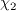
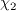
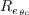
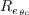

|
Langley Research CenterTurbulence Modeling Resource |
The Spalart-Allmaras 1-equation BCM Transitional Model
This web page gives detailed information
on the equations for the
SA-BCM (and earlier version SA-BC) transitional turbulence model.
This model is a linear eddy viscosity model.
Linear models use the Boussinesq assumption for the constitutive relation:
Unless otherwise stated, for compressible flow with heat transfer this model is implemented as described on the page
Implementing Turbulence Models into the Compressible RANS Equations, with perfect gas
assumed and Pr = 0.72, Prt = 0.90, and Sutherland's law for dynamic viscosity.
Return to: Turbulence Modeling Resource Home Page Spalart-Allmaras 1-equation BCM Transitional Model
(SA-BCM)
This transition model is a modification update to SA-BC, which had a few issues (see red text below).
The SA-BCM version fixes these issues with a different definition of
Note that "BC" stands for two of the authors' last names.
The SA-BCM transition model is coupled with the SA-noft2 model as follows:
The intermittency function is defined as:
where
and
In the above equations,
The physical interpretation of
In these equations, the
The freestream is set to
Spalart-Allmaras 1-equation BC Transitional Model
(SA-BC)
This older version of SA-BCM is no longer recommended.
The reference is:
It was subsequently uncovered that
was not coded as originally written in the above paper.
Below,
has been corrected to reflect how it was actually implemented.
This model is the same as SA-BCM, except that
where
In these equations, the
term is a proposed turbulent viscosity-like non-dimensional term, where
Warning: the use of velocity in the
term in this model makes it, strictly speaking,
not Galilean invariant.
Therefore results will be dependent on the frame of reference. Such a
dependence has been avoided in conventional turbulence modeling, and certainly in the original
SA model. (Note the use of velocity in the trip term ft1 of the model
SA-Ia, which has similarities to a transition model.
In that model, in order to maintain Galilean invariance,
In the original reference, was given as 5. However, as
coded by the authors, it actually includes the freestream Reynolds number
as
shown above.
This inclusion of Re may be problematic, since it brings
a possibly non-unique reference length into play. Turbulence models normally avoid such a dependence.
The reference length Lref can be arbitrary for
a given problem (for example, it may be wing chord, wing span, body diameter, or any number of
things).
Return to: Turbulence Modeling Resource Home Page Samet Cakmakcioglu is acknowledged for helping with this webpage.
Recent significant updates: Responsible NASA Official:
Ethan Vogel
 and
.
This version of the SA one-equation model is based on SA without the ft2 term
(SA-noft2). The production term of the
SA-noft2 is multiplied with a
intermittency function in order to damp turbulence production
until some transition criteria is achieved. From that point on, the damping effect of the transition model is
disabled and the rest of the flowfield is allowed to be fully turbulent. The proposed
intermittency function is calculated using local
flow variables and transition onset is determined based on experimental correlations. The references are:
and
.
This version of the SA one-equation model is based on SA without the ft2 term
(SA-noft2). The production term of the
SA-noft2 is multiplied with a
intermittency function in order to damp turbulence production
until some transition criteria is achieved. From that point on, the damping effect of the transition model is
disabled and the rest of the flowfield is allowed to be fully turbulent. The proposed
intermittency function is calculated using local
flow variables and transition onset is determined based on experimental correlations. The references are:
![\frac{\partial \tilde{\nu}}{\partial t}+ u_j \frac{\partial \tilde{\nu}}{\partial x_j} = \boldmath{\gamma_{BC}} c_{b1} \tilde{S} \tilde{\nu}
- c_{w1} f_w \left(\frac{\tilde{\nu}}{d}\right)^2
+ \frac{1}{\sigma} \left[ \frac{\partial}{\partial x_j} \left( (\nu + \tilde{\nu}) \frac{\partial \tilde{\nu}}{\partial x_j} \right)
+ c_{b2} \frac{\partial \tilde{\nu}}{\partial x_j} \frac{\partial \tilde{\nu}}{\partial x_j} \right]](sabc_eqns/img3.png)

 is given by:
is given by:

 is the local density,
is the local density,
 is the local molecular viscosity,
is the local molecular viscosity,
 is the vorticity,
is the vorticity,
 is the distance to the nearest wall,
is the distance to the nearest wall,
 is the so-called vorticity Reynolds number,
is the momentum thickness Reynolds number,
is the so-called vorticity Reynolds number,
is the momentum thickness Reynolds number,
 is the experimental transition onset critical momentum thickness Reynolds number,
is the experimental transition onset critical momentum thickness Reynolds number,
 is the freestream turbulence intensity in percent, and
is the freestream turbulence intensity in percent, and
 is a calibration constant.
Please note that the is a constant for the entire flowfield,
as the SA-noft2 model ignores the turbulent kinetic energy (k).
is that it checks for the onset location of transition by comparing the locally calculated
to the experimental correlation
. As soon as the so-called
vorticity Reynolds number
exceeds a critical value,
becomes larger than 0.0, and the intermittency function
is triggered. However, the
is a function of distance to the nearest wall
, thus, the
takes a very low value inside the boundary layer
(close to the wall). Because of this, there cannot be intermittency generation inside the boundary layer by using
alone. To remedy this,
is introduced.
is (newly) defined as:
is a calibration constant.
Please note that the is a constant for the entire flowfield,
as the SA-noft2 model ignores the turbulent kinetic energy (k).
is that it checks for the onset location of transition by comparing the locally calculated
to the experimental correlation
. As soon as the so-called
vorticity Reynolds number
exceeds a critical value,
becomes larger than 0.0, and the intermittency function
is triggered. However, the
is a function of distance to the nearest wall
, thus, the
takes a very low value inside the boundary layer
(close to the wall). Because of this, there cannot be intermittency generation inside the boundary layer by using
alone. To remedy this,
is introduced.
is (newly) defined as:
 is the turbulent eddy viscosity and
is a calibration parameter. Finally,
and
are given
below (with modified from its original definition in SA-BC):
is the turbulent eddy viscosity and
is a calibration parameter. Finally,
and
are given
below (with modified from its original definition in SA-BC):

 (or 0.005 times the original SA boundary condition).
(The influence of
(or 0.005 times the original SA boundary condition).
(The influence of
 comes in through
,
and not through the freestream .)
comes in through
,
and not through the freestream .)
is defined as:

 is the turbulent viscosity,
is the turbulent viscosity,
 is the local velocity magnitude,
is the distance to the nearest wall and
is a calibration parameter. The
and
are given
as (calibrated against Schubauer and Klebanoff flat plate test case):
is the local velocity magnitude,
is the distance to the nearest wall and
is a calibration parameter. The
and
are given
as (calibrated against Schubauer and Klebanoff flat plate test case):

 was used,
as the difference between the local velocity and a
relevant wall velocity.)
was used,
as the difference between the local velocity and a
relevant wall velocity.)
07/20/2020 - added modified SA-BCM model version
02/19/2019 - mentioned issue of lack of Galilean invariance
02/13/2019 - corrected chi_2 to reflect actual implementation (not in original reference)
01/29/2019 - emphasized warning message about inability to duplicate the results in the original reference
Page Curator:
Clark Pederson
Last Updated: 11/11/2021